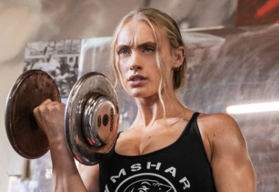
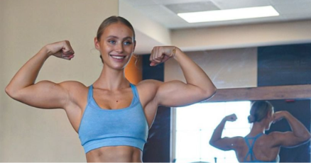
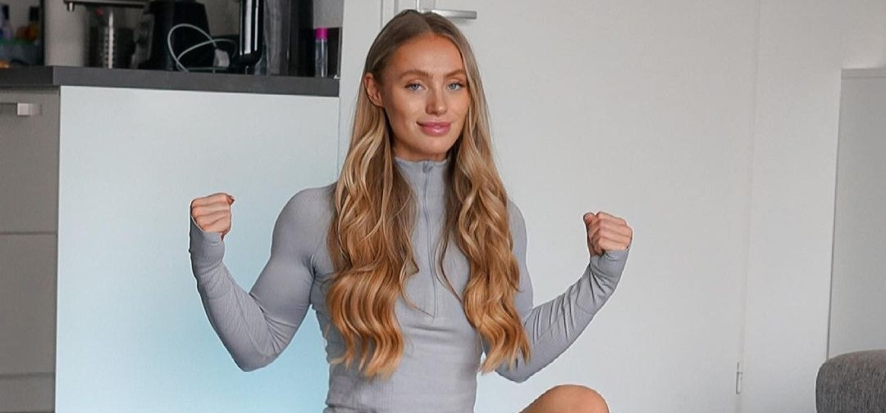
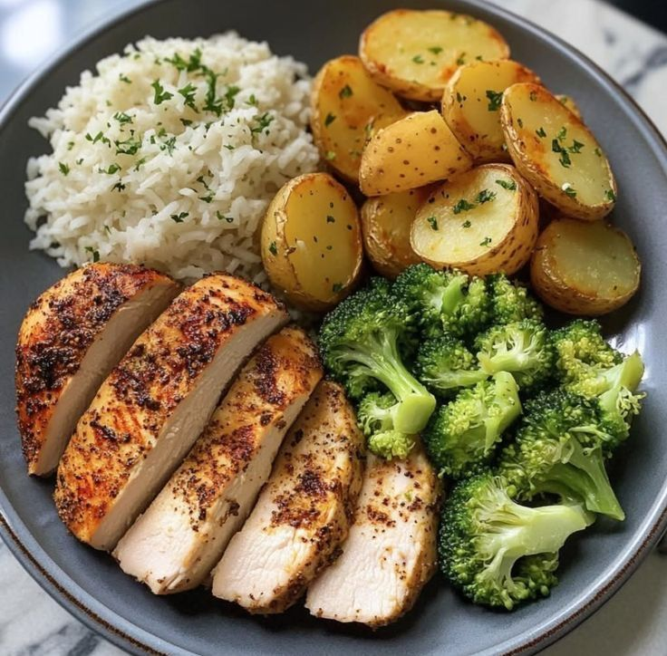
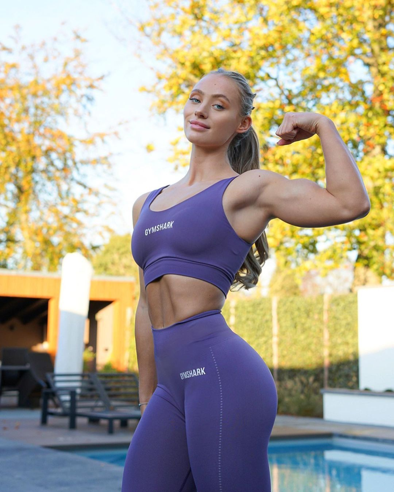
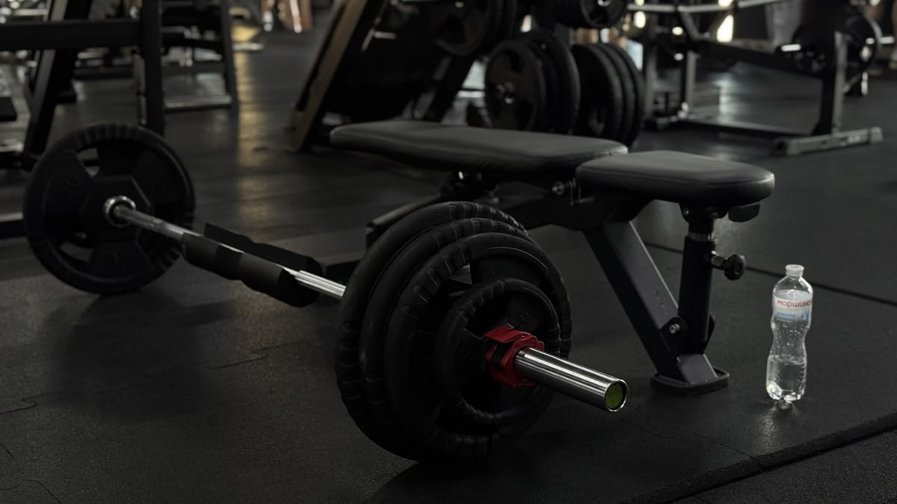

CONHECER
Seu histórico, sua rotina e o que você quer conquistar.
FITNESS · MOVIMENTO · ESTILO DE VIDA
Treino personalizado, acompanhamento próximo e uma rotina que faz sentido para a sua vida.
Comece sua jornadaDisciplina
cria
liberdade ♡
CONHEÇA SUA PERSONAL
PERSONAL TRAINER & MOVIMENTO
Um acompanhamento pensado para ajudar você a construir uma rotina de treino consistente, respeitando seus objetivos, seu momento e seu ritmo.
Progresso,
não
perfeição ♡
UMA JORNADA CONSTRUÍDA COM VOCÊ
Seu histórico, sua rotina e o que você quer conquistar.
Um plano de treinamento alinhado ao seu momento.
Orientação para evoluir com consistência.
Revisões do treino conforme sua evolução.
UM CAMINHO PARA CADA OBJETIVO




ESCOLHA COMO QUER COMEÇAR
Para treinar com autonomia
Planejamento e orientação inicial para organizar seus treinos.
Sob consulta
Para evoluir com proximidade
Treinamento com revisões e espaço para acompanhar sua evolução.
Sob consulta
Para treinar com orientação direta
Sessões individuais e ajustes durante a execução dos exercícios.
Sob consulta

Você consegue ♡
Seu contexto importa
Um passo de cada vez
Você não treina só
Treino na sua rotina
Pequenos passos.
Grandes caminhos. ♡
DO PRIMEIRO CONTATO À SUA ROTINA
Você entende cada etapa antes de começar. Uma conversa sobre seus objetivos, um olhar para a sua rotina e um caminho de treino construído com você.
Uma conversa para entender o que você busca com o treinamento e quais são suas prioridades neste momento.
Um planejamento que considera seu tempo, sua experiência e os recursos que você tem disponíveis.
Orientação para começar com clareza e espaço para revisar o planejamento conforme a sua evolução.
Vamos esclarecer
O planejamento pode considerar academia ou treino em casa. Converse sobre os recursos disponíveis antes de contratar.
Essa é a proposta deste modelo de acompanhamento: considerar objetivos, rotina e nível de experiência.
O formato, a frequência de contato e as revisões devem ser combinados antes da contratação.
As condições de alteração são informadas na proposta e no contrato do profissional.
A seção de nutrição direciona a uma página própria, ainda em preparação. Não representa prescrição nutricional pela personal.

SEU PRÓXIMO PASSO COMEÇA AQUI
Vamos conversar sobre seus objetivos e o acompanhamento ideal para você.
Mais forte.
Todos os dias. ♡